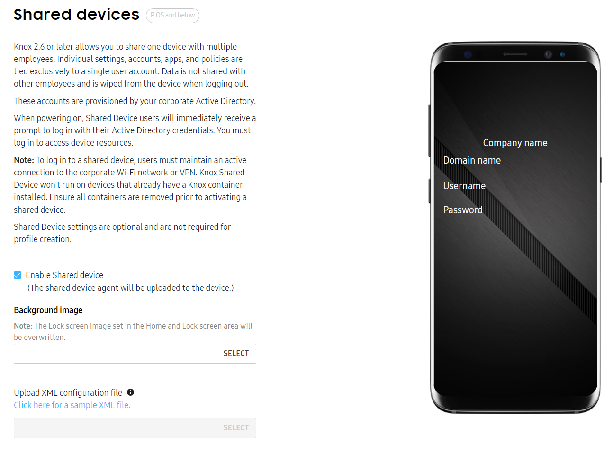
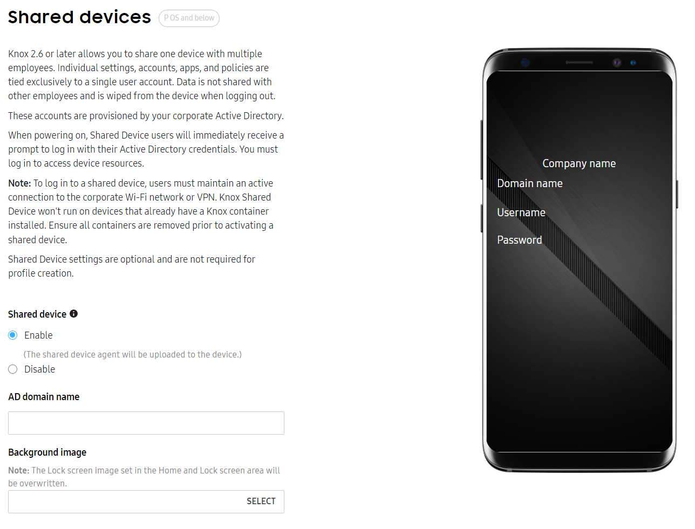
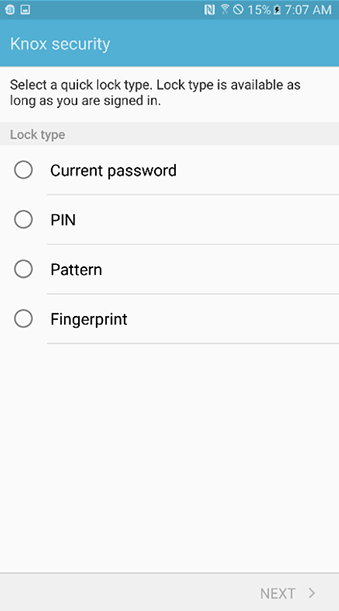
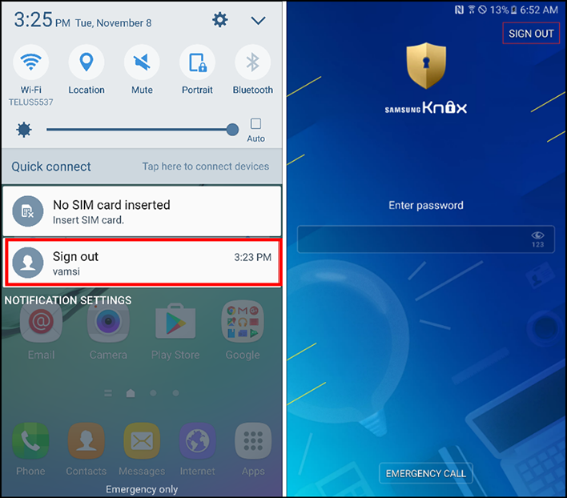
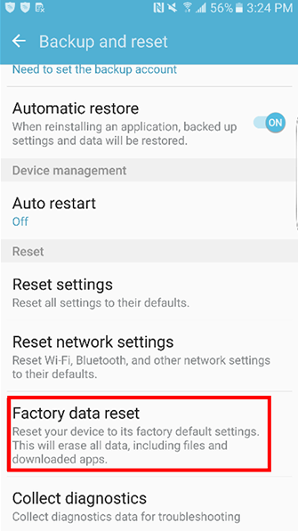

About Shared Device
Last updated July 26th, 2023
The Knox Configure Shared Device feature enables multiple users to access the same device without sharing data across multiple devices, thus reducing the risk of an exploited device.
When powering on a Shared Device, each employee is prompted to sign in a separate account with their Active Directory credentials and manage their own unique set of files and apps. Each user’s settings, accounts, applications and policies are saved to their user account. After a user signs out, data is wiped from the device and isn’t shared with other users.
Shared device functionality is optional and not required when creating a Knox Configure profile.
Note
The Knox Configure client will ignore shared device configurations on devices running the Android Q version operating system and above. The Knox Configure console provides a warning for now unsupported status of shared device and E-billing on the Q version operating system. If the shared device feature was already enabled on an existing device, and that device was FOTA updated to the Q version operating system, the shared device feature should be disabled when a newly applied profile has shared device disabled.
Samsung Knox Single Sign On (SSO)
Samsung’s SSO technology is based on the Kerberos protocol, which allows device users to authenticate with a single account and access a wide range of enterprise resources efficiently without having to sign in to each application. SSO eliminates the burden of having to remember multiple passwords and affords users the luxury of a single password that meets corporate password policies. Once an employee is finished using the Shared Device, they simply sign out and hand the device to the next user, who then enters their own secure credentials to access their files and apps.
Note
To sign in to a Shared Device, users must maintain an active connection to their corporate Wi-Fi network or VPN. Shared device functionality does not work on devices utilizing a Knox container. Ensure device containers are removed prior to activating a Shared Device.
The application client and Samsung’s SSO solution on the device authenticate with Enterprise Active Directory as follows:
- SSO client on the device communicates with Active Directory for Kerberos authentication through VPN or by using on-premise Wi-Fi.
- Upon successful authentication, the SSO client provides the requested authentication token to the app.
- The authentication token, Negotiate token (for HTTP Negotiate) or SAML response (for SAML 2.0) is then forwarded to an Intranet service or cloud device respectively depending on the token request time.
Prerequisites
The following prerequisites are required to set up and use a Shared Device:
- Active Directory
- End user credentials
- Kerberos (port 88) must be enabled for the Shared Device authentication
- A supported Samsung device running Knox 2.6 or higher.
Configure Shared Device
In order to use a device as a Shared Device, you need to set up Shared Device settings for the device’s profile.
Note
Shared Device is only supported in Dynamic edition Normal mode profiles.
Caution
By default, users can factory reset their device after logging in to their Shared Device account. Once the device is factory reset, the Knox Shared Device APK is removed and the device can be used as a regular Android device with no restrictions. When factory reset, Wi-Fi, and mobile data is disabled in Knox Configure. Consequently, the device can’t be updated or unenrolled. We recommend preventing users from factory resetting their device — for details, see the Security section of Configure profile settings.
For Knox 2.8 and lower

-
Select Enable Shared device. When you assign this profile to the device, the Shared Device agent will be uploaded to the device.
-
Optionally, choose a Background image for the Shared Device screen.
-
Optionally, upload an XML configuration file to set the Active Directory domain name and other optional fields.
-
Optionally, upload your Company logo and enter your Company name. You can view a preview of the Shared Device screen with your custom logo and name on the right.
For Knox 2.9 and higher
Devices supporting Knox version 2.9 and higher support additional Shared Device configuration options.

-
Enable Shared device. When you assign this profile to the device, the Shared Device agent will be uploaded to the device.
-
Enter your corporate Active Directory domain name.
Note
When the device user powers on the device, they receive a prompt to sign in to the Shared Device with their Active Directory credentials for this domain. A successful login is required to access Shared Device resources.
-
Optionally, choose a Background image for the Shared Device screen.
-
Optionally, upload your Company logo and enter your Company name. You can view a preview of the Shared Device screen with your custom logo and name on the right.
-
Optionally, in Screen timeout (minutes), enter the maximum amount of time a Shared Device can remain idle before password credentials must be re-entered to resume access. If left empty, the default value is 120 minutes.
-
Optionally, in Maximum allowed screen lock attempts reached, enter the maximum number of failed lock screen attempts permitted on a Shared Device. If left empty, the default value is 5.
-
Optionally, enter the package names of any apps that you want to retain their data even after exiting Shared Device mode.
You can upload a CSV of app package names if you want to add apps in bulk.
-
Select Enable Kerberos SSO to upload Samsung’s recommended Kerberos authenticator to the Shared Device.
Prevent users from stopping the Knox Shared Device app
Caution
By default, users can disable the Knox Shared Device app by navigating to Settings > Application Manager. After the app is disabled, the device converts to a regular Android device without restrictions beyond the policies that you have already deployed.
Samsung recommends blocking the Force Stop and Clear Data options for the Knox Shared Device. Consider deploying policies to prevent users from going to Application Manager and using the Force Stop or Clear Data options to prevent a Shared Device app from running properly.
If you programmatically manage a Knox Shared Device, call the APIs referenced below and pass com.sec.enterprise.knox.shareddevice and com.sec.enterprise.knox.shareddevice.keyguard as the packageList input parameter:
addPackagesToForceStopBlackList (List <String> packageList)addPackagesToClearDataBlackList (List <String> packageList)addPackagesToClearCacheBlackList (List <String> packageList)setApplicationUninstallationDisabled (List <String> packageName)
Use the Knox Configure Shared Device
Refer to the following information to set up and sign in to a Knox Shared Device, and if necessary uninstall Knox Shared Device.
Setup Knox Shared Device
To configure Knox Shared Device support on the actual device:
-
Enter the following credentials provided by your IT admin, then tap Sign in.
- Domain name
- Username
- Password
-
Select an unlock method.
- Current password
- PIN
- Pattern
- Fingerprint
-
Select and confirm the unlock method.

Sign in to Knox Shared Device
Note
Once enrolled in Knox Shared Device, you cannot use the device without signing in to your account.
To sign in to Knox Shared Device:
-
Enter the following credentials provided by your IT admin.
- Domain name
- Username
- Password
-
Tap Sign in.
Sign out of Knox Shared Device
To sign out of a Knox Shared Device:
- Swipe down from the top of the screen to display the status bar.
- Tap Sign out on the notification pane with your Knox Shared Device username.
OR
- Lock the device.
- Tap SIGN OUT from the top right-hand corner of the device.

Uninstall Knox Shared Device
If you attempt to uninstall Knox Shared Device without factory resetting the device, some user data may remain on the device.
Note
Samsung recommends you deploy a policy to prevent users from factory resetting their device. Otherwise, they may accidentally uninstall Knox Shared Device.
To uninstall Knox Shared Device:
- Deploy a factory reset policy to the device.
- Alternatively:
- Sign in to your Knox Shared Device account.
- Navigate to Settings > Backup and reset > Factory data reset.
- Tap RESET DEVICE.

Is this page helpful?